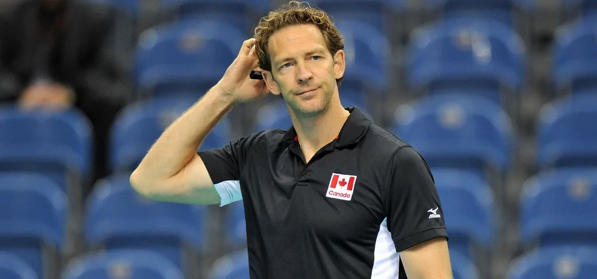
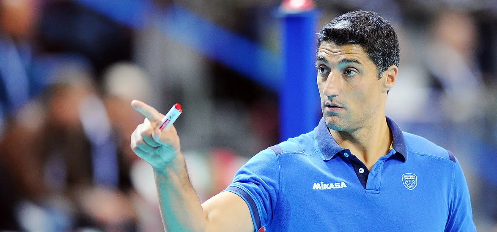
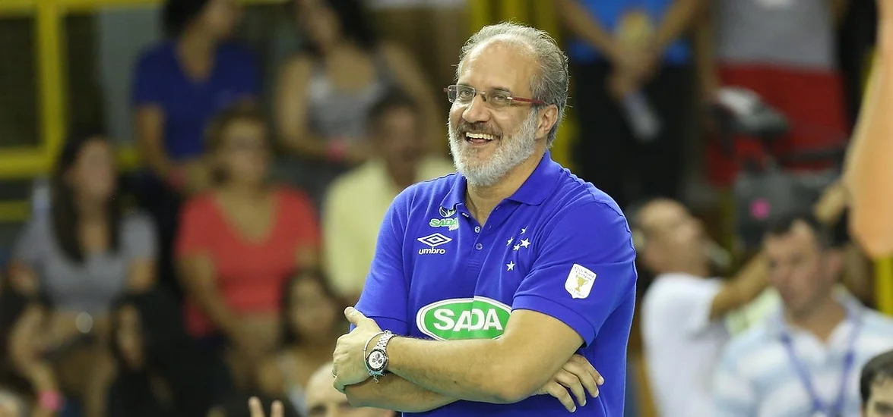

NASI TRENERZY
Ludzie, którzy prowadzą nas do zwycięstwa
Poprowadzenie zespołu do zwycięstwa to trudne zadanie, któremu mogą sprostać jedynie najbardziej doświadczone i niezwykłe umysły. Dlatego drużyny z całego kraju wybierają najlepszych trenerów w Polsce. Czytaj dalej, aby dowiedzieć się, jak pomagają graczom wykorzystać swój potencjał. Trener Stéphane Antiga, Trener Andrea Giani i Trener Marcelo Méndez.

Stéphane Antiga
KS DevelopRes Rzeszów
Stephane Antiga to były francuski siatkarz, który zdobył wiele tytułów jako zawodnik, a teraz odnosi sukcesy jako trener. Jego doświadczenie na boisku i umiejętność prowadzenia zespołu pomogły Developres Rzeszów stać się czołową drużyną w Tauron Lidze. Antiga słynie z umiejętności budowania silnych relacji z zawodniczkami i tworzenia drużyny opartej na współpracy i wzajemnym wsparciu.
Link

Andrea Giani
ZAKSA Kędzierzyn-Koźle
Andrea Giani to znany włoski trener i były siatkarz, który zdobył uznanie w świecie siatkówki. Posiada bogate doświadczenie w prowadzeniu drużyn, wykazując doskonałe zrozumienie gry i efektywne zarządzanie zespołami. Pod jego kierunkiem Zaksa Kędzierzyn-Koźle umacnia swoją pozycję w polskiej lidze i odnosi sukcesy na arenie międzynarodowej. Giani jest znany ze strategicznego podejścia i zdolności do motywowania zawodników, co czyni go kluczową postacią w sukcesach Zaksy.
Link

Marcelo Méndez
Jastrzębski Węgiel
Marcelo Mendez to trener z Argentyny, znany ze swojego innowacyjnego podejścia i zdolności do pracy z różnorodnymi zespołami. Pod jego kierownictwem Jastrzębski Węgiel stał się silniejszym i bardziej zgranym zespołem. Jego doświadczenie na arenie międzynarodowej przyczynia się do rozwoju klubu zarówno w kraju, jak i poza nim.
Link